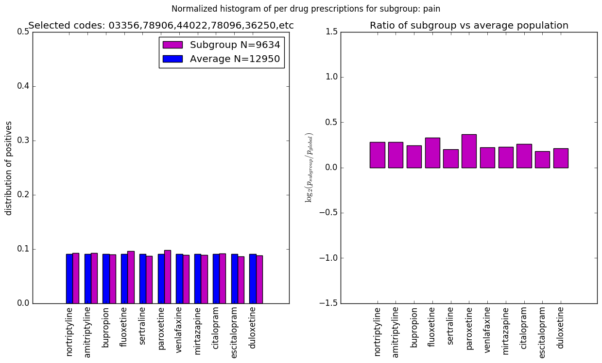

TYPE = extra_trees_quantile_0.25
LABEL = pain
SRCFILE: db=churn_20180610-type=extra_trees_quantile_0.25-label=pain-codes=03356,78906,44022,78096,36250,etc.png
CODE DESCRIPTION
3356 chlorpheniramine-hydrocodone_d03356
78906 abdominal_pain,_epigastric_78906
44022 atherosclerosis_of_the_extremities_with_rest_pain_44022
78096 generalized_pain_78096
36250 macular_degeneration_(senile)_of_retina,_unspecified_36250
75625 aortography,_abdominal,_by_serialography,_radiological_supervision_and_interpretation_c75625
3431 acetaminophen-oxycodone_d03431
3428 acetaminophen-hydrocodone_d03428
3393 codeine-guaifenesin_d03393
33818 other_acute_postoperative_pain_33818
33819 other_acute_pain_33819
7873 flatulence,_eructation,_and_gas_pain_7873
3423 acetaminophen-codeine_d03423
77295 therapeutic_radiology_simulation-aided_field_setting;_three-dimensional_c77295
33811 acute_pain_due_to_trauma_33811
71941 pain_in_joint_involving_shoulder_region_71941
30780 psychogenic_pain,_site_unspecified_30780
37991 pain_in_or_around_eye_37991
3340 homatropine-hydrocodone_d03340
3383 neoplasm_related_pain_(acute)_(chronic)_3383
7241 pregnancy_examination_or_test,_negative_result_v7241
7841 throat_pain_7841
78907 abdominal_pain,_generalized_78907
71943 pain_in_joint_involving_forearm_71943
4852 bupivacaine-fentanyl_d04852
4313 fentanyl_topical_d04313
33828 other_chronic_postoperative_pain_33828
1164 codeine_d01164
6258 other_specified_symptoms_associated_with_female_genital_organs_6258
12 codeine_d00012
78652 painful_respiration_78652
78651 precordial_pain_78651
78650 unspecified_chest_pain_78650
44625 closure_of_enterostomy,_large_or_small_intestine;_with_resection_and_anastomosis_other_than_colorectal_c44625
255 hydromorphone_d00255
50 methadone_d00050
78904 abdominal_pain,_left_lower_quadrant_78904
78659 other_chest_pain_78659
7194 pain_in_joint_7194
71944 pain_in_joint_involving_hand_71944
71945 pain_in_joint_involving_pelvic_region_and_thigh_71945
71946 pain_in_joint_involving_lower_leg_71946
71947 pain_in_joint_involving_ankle_and_foot_71947
71940 pain_in_joint,_site_unspecified_71940
7295 pain_in_limb_7295
71942 pain_in_joint_involving_upper_arm_71942
78492 jaw_pain_78492
4225 hydrocodone-ibuprofen_d04225
3384 chronic_pain_syndrome_3384
71948 pain_in_joint_involving_other_specified_sites_71948
71949 pain_in_joint_involving_multiple_sites_71949
6253 dysmenorrhea_6253
7865 chest_pain_7865
33821 chronic_pain_due_to_trauma_33821
86255 fluorescent_noninfectious_agent_antibody;_screen,_each_antibody_c86255
78903 abdominal_pain,_right_lower_quadrant_78903
78902 abdominal_pain,_left_upper_quadrant_78902
78901 abdominal_pain,_right_upper_quadrant_78901
78900 abdominal_pain,_unspecified_site_78900
33829 other_chronic_pain_33829
329 oxycodone_d00329
78905 abdominal_pain,_periumbilic_78905
750 hydrocodone_d00750
56942 anal_or_rectal_pain_56942
1625 malignant_neoplasm_of_lower_lobe,_bronchus_or_lung_1625
308 morphine_d00308
86256 fluorescent_noninfectious_agent_antibody;_titer,_each_antibody_c86256
3502 atypical_face_pain_3502
33383 spasmodic_torticollis_33383
3425 apap/butalbital/caffeine/codeine_d03425
78909 abdominal_pain,_other_specified_site;_multiple_sites_78909
6256 stress_incontinence,_female_6256
6259 unspecified_symptom_associated_with_female_genital_organs_6259
3429 acetaminophen-hydrocodone_d03429
4887 bupivacaine-hydromorphone_d04887
31625 bronchoscopy_(rigid_or_flexible);_with_biopsy_c31625
29625 major_depressive_disorder,_single_episode,_in_partial_or_unspecified_remission_29625
6251 vaginismus_6251
6250 dyspareunia_6250
3625 acetic_acid-hydrocortisone_otic_d03625
7890 abdominal_pain_7890
6254 premenstrual_tension_syndromes_6254
